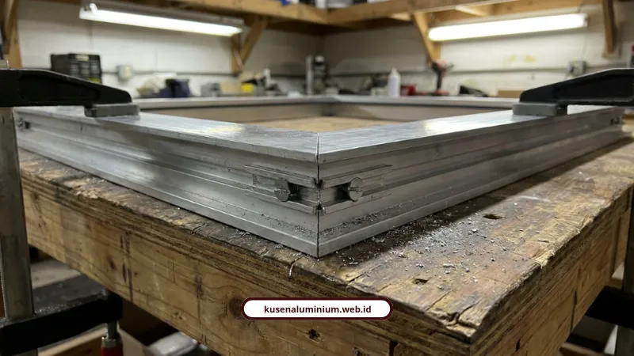
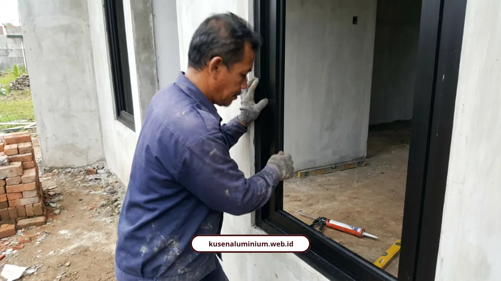

Jasa Pasang Kusen Aluminium Malang: Proses, Garansi, & Estimasi Biaya

📌 Ringkasan Inti
Layanan jasa pasang kusen aluminium profesional di Malang Raya dengan jaminan presisi miter 45 derajat, garansi pemasangan kusen resmi tertulis, serta estimasi biaya transparan:
- Bebas risiko lapuk dan rayap menghadapi iklim dingin & lembap khas Malang Raya (Kota Batu, Karangploso, Malang).
- Standar material kusen aluminium Malang bersertifikat SNI dari YKK AP, Alexindo, dan Forta tebal 1,1 mm hingga 1,35 mm.
- Presisi miter 45 derajat menggunakan mesin potong khusus dengan double weather-seal karet EPDM anti-bocor.
- Alur kerja transparan 4 tahap: survei gratis, RAB transparan per meter, fabrikasi workshop mandiri, dan instalasi bergaransi.
- Garansi pemasangan kusen resmi tertulis 1 tahun untuk instalasi teknis, seal kedap air, serta garansi aksesoris produsen.
- Kenapa Warga Malang Raya Ramai-Ramai Tinggalkan Kusen Kayu?
- Apa yang Membuat Pemasangan Kami Beda dari yang Lain?
- Bagaimana Proses Pengerjaan Kusen Aluminium dari Awal sampai Selesai?
- Berapa Estimasi Biaya Pasang Kusen Aluminium di Malang?
- Apakah Ada Garansi Resmi untuk Pemasangan Kusen Ini?
- Warna dan Finishing Apa yang Lagi Tren untuk Kusen Aluminium 2026?
- Apa Kata Klien yang Sudah Pakai Jasa Kami?
- Kesimpulan
Sedang mencari jasa pasang kusen aluminium terpercaya di Malang Raya? Kami menghadirkan solusi pemasangan kusen aluminium Malang berkualitas tinggi dengan jaminan presisi miter 45 derajat, estimasi biaya transparan, serta garansi pemasangan kusen resmi tertulis agar hunian Anda terlindungi maksimal tanpa rasa khawatir.
Kenapa Warga Malang Raya Ramai-Ramai Tinggalkan Kusen Kayu?
Karena kayu kalah telak melawan kelembapan khas Malang, apalagi di Batu dan Karangploso yang udaranya dingin dan lembap sepanjang tahun. Kusen kayu gampang diserang rayap, memuai saat musim hujan, lalu menyusut dan retak saat kemarau.
Aluminium tidak punya masalah semacam itu. Bahan ini tahan korosi, anti rayap, dan tidak lapuk meski kena hujan tiap hari.
Ada beberapa alasan konkret kenapa aluminium jadi pilihan lebih masuk akal secara jangka panjang:
- Tidak perlu dicat ulang tiap tahun, cukup dilap kain lembap.
- Harganya jauh lebih stabil dibanding kayu jati atau merbau yang makin langka dan makin mahal.
- Tidak menyusut atau memuai signifikan meski cuaca berubah drastis.
- Bebas risiko lapuk meski dipasang di area yang jarang kena sinar matahari langsung.
Adhitya Putra, jurnalis properti dari RealEstat.id, pernah mengulas soal ini. Menurutnya, kusen aluminium kini jadi favorit renovasi karena harganya lebih stabil dibanding kayu yang makin terbatas, sekaligus mampu menghadapi iklim tropis tanpa perlu biaya pengecatan ulang berkala.

Apa yang Membuat Pemasangan Kami Beda dari yang Lain?
Bedanya ada di presisi sambungan dan kualitas material yang kami pakai, bukan sekadar tempel kusen ke tembok. Kami sudah menangani lebih dari 500 bukaan di Malang Raya selama lebih dari 10 tahun, jadi bukan kerjaan coba-coba.
Tiga hal yang jadi standar kerja kami:
- Material bersertifikat SNI dari YKK AP, Alexindo, dan Forta, dengan ketebalan 1,1 mm sampai 1,35 mm, bukan bahan tipis yang gampang penyok kena senggol.
- Presisi miter 45 derajat memakai mesin potong khusus, sehingga sambungan sudut rapat tanpa celah yang jadi jalan masuk air.
- Penyekat karet EPDM ganda (weather-seal) yang membuat kusen kedap air hujan sekaligus meredam suara dari luar.
Soal detail ketebalan dan alasan kenapa itu penting untuk kekuatan struktur, kami sudah bahas lengkap di standar material aluminium yang kami gunakan. Kalau mau tahu kenapa selisih 0,25 mm saja bisa berdampak besar ke daya tahan kusen lantai dua, silakan mampir ke pembahasan ketebalan profil aluminium 1.1mm vs 1.35mm.
Paket Jasa Pasang Kusen Aluminium Presisi Malang Raya
Nikmati layanan survei dan ukur presisi gratis ke lokasi rumah atau proyek Anda. Dikerjakan dengan mesin miter 45° workshop mandiri, material resmi SNI, dan garansi tertulis.
Bagaimana Proses Pengerjaan Kusen Aluminium dari Awal sampai Selesai?
Prosesnya ada empat tahap, dan semuanya transparan bisa Anda pantau. Tidak ada tahap siluman yang tiba-tiba muncul di tagihan akhir.
- Survei dan ukur presisi (gratis): Tim kami datang ke lokasi mengukur dimensi lubang bukaan tembok dengan toleransi presisi sampai 0,5 mm.
- Penyusunan RAB dan gambar kerja: Anda dapat rincian biaya per meter lari atau per meter persegi, plus persetujuan merek dan warna, tanpa biaya tersembunyi di belakang.
- Fabrikasi di workshop mandiri: Pemotongan miter 45 derajat, perakitan rangka dengan screw spline, dan pemasangan aksesoris dikerjakan di workshop selama 3 sampai 7 hari kerja, supaya rumah Anda tetap bersih tanpa serbuk logam berserakan.
- Instalasi dan weather-seal di lokasi: Pemasangan di rumah Anda memakan waktu 1 sampai 2 hari, memakai shims, waterpass, anchoring struktural, sealant EPDM kedap air, uji fungsi kunci, sampai penyerahan kartu garansi.
Tahap fabrikasi ini yang sering luput dari perhatian orang, padahal justru di situ kualitas akhir kusen ditentukan. Kami sudah kupas tuntas soal mesin, alat, sampai standar K3 di workshop pada artikel proses fabrikasi kusen aluminium di workshop kami.
M Rizal Ayuby dan Nizwa Rizqin Qinthara, spesialis edukasi YKK AP Sinar Fortuna, menjelaskan bahwa pemasangan kusen aluminium berstandar pabrikan dengan sistem screw spline, EPDM glazing, anchoring merata, dan weathersealant sangat menentukan performa akhir seperti kekedapan udara, kekedapan air, dan insulasi suara.
Berapa Estimasi Biaya Pasang Kusen Aluminium di Malang?
Biayanya tergantung merek profil, ketebalan, jenis kaca, dan warna finishing yang Anda pilih. Sebagai gambaran kasar, berikut kisaran harga bahan per merek:
- YKK AP (kelas premium): ketebalan 1,35 sampai 1,46 mm, finishing anodize atau powder coating lapis ganda, EPDM ganda, sangat kedap air dan suara. Kisaran Rp250.000 sampai Rp350.000 per meter lari.
- Alexindo (kelas menengah/ekonomis): ketebalan 1,0 sampai 1,15 mm, finishing standar yang kokoh untuk rumah tinggal. Kisaran Rp150.000 sampai Rp250.000 per meter lari.
Untuk jasa pasangnya sendiri, referensi biaya borongan di Malang kira-kira begini:
- Kusen 3 inci: sekitar Rp80.000 per meter lari.
- Kusen 4 inci: sekitar Rp95.000 per meter lari.
- Kaca mati: sekitar Rp200.000 per meter persegi.
- Daun pintu aluminium: sekitar Rp1.500.000 per daun.
- Daun jendela aluminium: sekitar Rp650.000 per daun.
Cara hitung kasarnya begini. Keliling kusen (meter lari) = (tinggi + lebar) x 2. Total biaya kusen = total meter lari x harga kusen per meter. Total biaya kaca = (panjang x lebar dalam meter persegi) x harga kaca per meter persegi. Tinggal tambah biaya aksesoris seperti engsel, kunci, dan handle, plus jasa pasang, untuk dapat estimasi total.
Kalau bingung memilih ketebalan yang cocok untuk bukaan besar seperti pintu geser, saya sarankan cek dulu perbandingan 1.1mm vs 1.35mm supaya tidak salah pilih spesifikasi yang ujungnya bikin rangka melenting.
"Presisi sambungan sudut miter 45 derajat dan kerapatan weather-seal karet EPDM adalah pembeda utama antara kusen yang tahan puluhan tahun dengan kusen yang bocor saat musim hujan tiba di Malang."
Apakah Ada Garansi Resmi untuk Pemasangan Kusen Ini?
Ada, dan garansinya tertulis, bukan janji lisan yang gampang menguap begitu proyek selesai. Kami menyediakan sertifikat garansi pengerjaan, jaminan anti kebocoran sealant EPDM, dan garansi fungsi kunci.
Rincian garansi standar industri yang kami ikuti:
- Garansi teknis perakitan dan instalasi (misalnya pintu turun atau menggesek lantai) berlaku 1 tahun sejak berita acara serah terima.
- Garansi kedap air pada silicone sealant berlaku 1 tahun.
- Garansi aksesoris merek resmi seperti engsel, handle, kunci, dan rel bervariasi dari 1 tahun sampai mengikuti garansi sparepart produsen.
Setelah masa garansi habis pun, kami tetap memprioritaskan perbaikan purna jual dengan perhitungan upah dan material yang transparan.
Warna dan Finishing Apa yang Lagi Tren untuk Kusen Aluminium 2026?
Tren tahun ini condong ke warna yang tegas tapi tidak norak, dengan matte black jadi yang paling banyak diminati. Berikut pilihan yang paling sering dipesan klien kami:
- Matte black (hitam doff): kesan modern dan tegas, tidak memantulkan cahaya berlebih, cocok untuk rumah minimalis kontemporer.
- Woodgrain texture (serat kayu): menghadirkan nuansa hangat kayu alami tanpa risiko dimakan rayap.
- Metallic bronze dan champagne: kesan mewah dan eksklusif untuk hunian premium.
- Warm grey / greige: warna netral lembut yang fleksibel dipadukan gaya interior apa pun.
- Putih coating / off-white: memberi kesan bersih dan membuat ruangan terasa lebih luas.
CAP Writer, penulis arsitektur dari Cahaya Alupancar Prospektif, menegaskan bahwa pemilihan warna dan finishing seperti matte black, metallic bronze, dan woodgrain pada 2026 merupakan bagian dari investasi jangka panjang yang mendukung estetika timeless sekaligus meningkatkan nilai jual properti.
Tim Ahli Renovasi & Interior Dewape Design juga menyarankan warna kusen disesuaikan konsep rumah, hitam untuk gaya industrial, putih atau silver untuk minimalis. Kualitas karet penyekat (gasket) juga jangan diremehkan karena berpengaruh langsung ke peredaman getaran dan suara.
Apa Kata Klien yang Sudah Pakai Jasa Kami?
Daripada saya yang klaim sendiri, lebih adil kalau Anda dengar langsung dari yang sudah pakai jasa kami.
Rizky Hermawan, Manager PT Maju Bersama, bilang proyek kantornya selesai dengan kualitas luar biasa. Transparansi RAB dan laporan progres berkala membuatnya tenang sepanjang proses pembangunan.
Maya Sari, pemilik rumah di Batu, mengaku renovasi rumah lamanya jadi tampak modern seperti rumah baru. Menurutnya tim kami profesional, cepat, harga kompetitif, dan setelah tiga tahun kualitasnya masih terjaga.
Muhammad Musyaffa, pemilik villa di Kota Batu, menyebut pemasangan pintu lipat aluminium YKK AP di villanya sangat presisi, relnya lancar, rapi, dan benar-benar kedap dari hawa dingin luar.
dr. Sylvia Anggraeni, konsumen rumah tinggal di Lowokwaru, menuturkan jendela casement Alexindo hasilnya rapi, kedap air saat hujan deras, dan suara bising dari luar berkurang drastis.
Beberapa portofolio yang sudah kami kerjakan antara lain:
- Pintu sliding glass minimalis di kawasan Ijen, Kota Malang.
- Pintu lipat folding door untuk villa modern di Kota Batu.
- Partisi kaca ruang rapat kantor di Suhat, Kota Malang.
- Jendela casement YKK AP 4 inci di Perumahan Araya.
- Kusen aluminium white coating di Sawojajar.
- Jendela sliding dua daun minimalis di kawasan Dieng.
Kalau Anda penasaran seperti apa hasil kerja kami di lapangan secara visual, silakan lihat langsung koleksi lengkapnya di galeri proyek kami.
Kesimpulan
Memilih jasa pasang kusen aluminium bukan cuma soal pasang rangka lalu selesai. Ada urusan presisi sambungan, kualitas material, garansi resmi, dan transparansi RAB yang menentukan apakah kusen itu akan awet 10 tahun ke depan atau malah bocor di tahun pertama.
Kami melayani Malang Raya, mulai dari Kota Malang, Kabupaten Malang, sampai Kota Batu, dengan standar kerja yang sama untuk setiap proyek, baik rumah tinggal maupun bangunan komersial.
Kalau Anda sudah punya gambaran ukuran bukaan di rumah, tim kami siap membantu hitungkan estimasi biayanya secara gratis, dan Anda bisa cek dulu portofolio lengkapnya di halaman galeri sebelum memutuskan.
FAQ Seputar Jasa Pasang Kusen Aluminium
Total waktu pengerjaan biasanya 4 sampai 9 hari kerja, terdiri dari 3 sampai 7 hari fabrikasi di workshop dan 1 sampai 2 hari instalasi di lokasi. Durasi bisa berubah tergantung jumlah bukaan dan kompleksitas desain.
Tidak, survei dan pengukuran presisi ke lokasi kami berikan secara gratis sebelum penyusunan RAB. Ini bagian dari komitmen kami menghindari biaya siluman di tahap awal proyek.
Sangat cocok, karena aluminium tahan korosi dan tidak lapuk meski terpapar kelembapan tinggi sepanjang tahun. Berbeda dengan kayu yang rentan diserang rayap dan memuai di kondisi cuaca seperti itu.